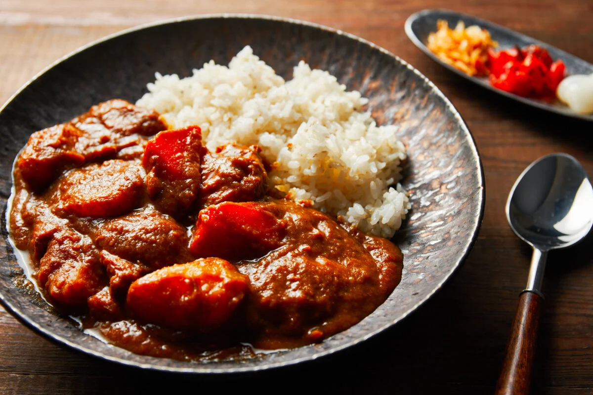
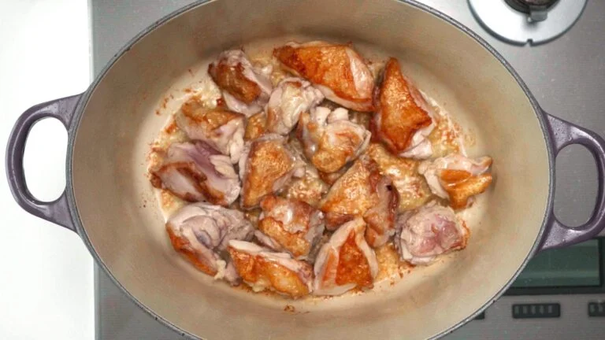
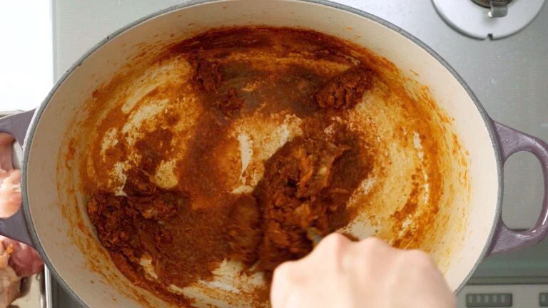
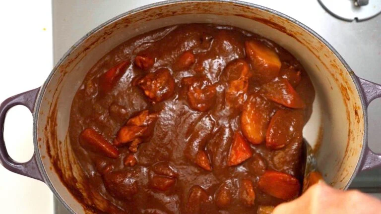

Description
Delicious homemade recipe that focuses on fresh ingredients, strong flavors, and easy to follow steps!
Japanese curry is a comfort food for the Japanese people. It is easily affordable that oftens times is dressed up with different types of katsu or pickled vegetables. It can also be made using animal stocks to give it more flavor, but we will focus on using vegetable broth to keep it vegan friendly!
Ingredients
- 1 tablespoon vegetable oil
- 800 grams skin-on boneless chicken thighs (cut into large bit-size pieces)
- 30 grams ginger (grated)
- 20 grams garlic (grated)
- 1/4 cup water
- 1 teaspoon salt
- 1/8 teaspoon baking soda
- 600 grams onions (2 large minced)
- 70 grams carrot (grated)
- 24 grams Japanese Curry Powder~3 tablespoon
- 4 cups vegetable stock
- 1 banana
- 400 grams potatoes
- 300 grams carrots
- 1 bay leaf
- 1 star of anise
- 2 tablespoons soy sauce
- 1 tablespoon chunou sauce
- 1 tablespoon tomatoe paste
- 2 teaspoons cocoa powder
Steps
- Add the salt and baking soda to the water and mix until dissolved.
- Add the vegetable oil to a heavy-bottomed pot such as a dutch oven and heat over medium-high heat until the oil is shimmering (but not smoking.)
- Add the chicken in a single layer with the skin-side down and fry undisturbed until the skin is browned and crisp (about 3 minutes). Flip the chicken over and brown the second side.
- When the chicken is browned on both sides, remove it from the pan and add the graetd ginger and garlic. Saute until you have a thick layer of brown fond on the bottom of the pot and the mixture is caramelized.

- Add the onions along with the baking soda solution and quickly give it a stir to coat the onions evenly with the mixture. Cover the pot wit ha lid and turn down the heat to low, allowing the onions to steam for 10 minutes.
- Remove the lid and turn up the heat to medium-high, boiling the mixture until there is very little liquid left.
- Add the grated carrot and fry the mixture by stirring and then spreading the vegetables into an even layer and then stirring again until the onions are fully caramelized, and the mixture is cinnamon brown.
- Add the curry powder and stir the mixture together until it is very fragrant (about 1 minute). Be careful not to burn it.

- Add the vegetable stock and banana, and then use a stick blender to puree the mixture until smooth.
- Now you want to return the chicken to the pot along with the potatoes, carrots, soy sauce, chunou sauce, tomato paste, bay leaf, star of anise, and cocoa powder.
- Adjust the heat to maintain a gentle simmer and then let this cook until the carrots and potatoes are tender (about 1 hour). You“ll want to mix the curry every 10 minutes or so to make sure it is not burning to the bottom of the pot.
- The curry is done when the vegetable and chicken are tender, and the sauce is very thick. Taste the curry and adjust the seasonings with salt and cayenne pepper to taste. If you like a looser curry, you can add water to thin it out.

- Serve the Japanese curry with Japanese short-grain rice!! :).
Return to Top
Return to Main